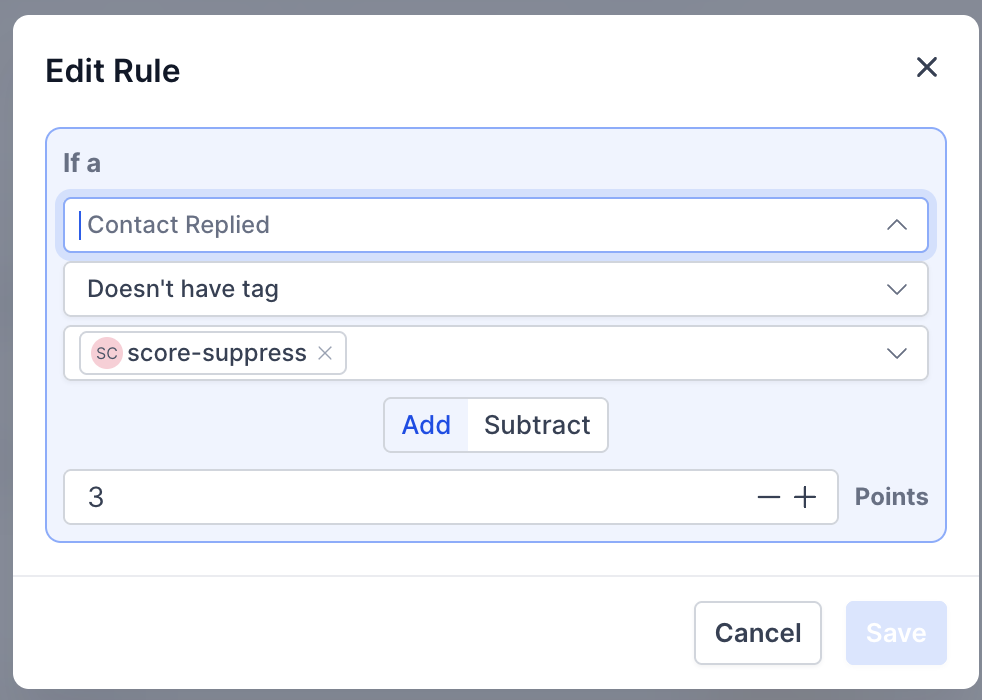
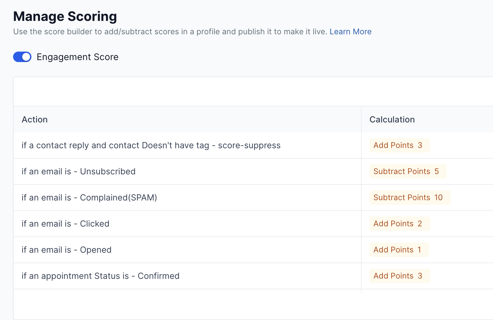
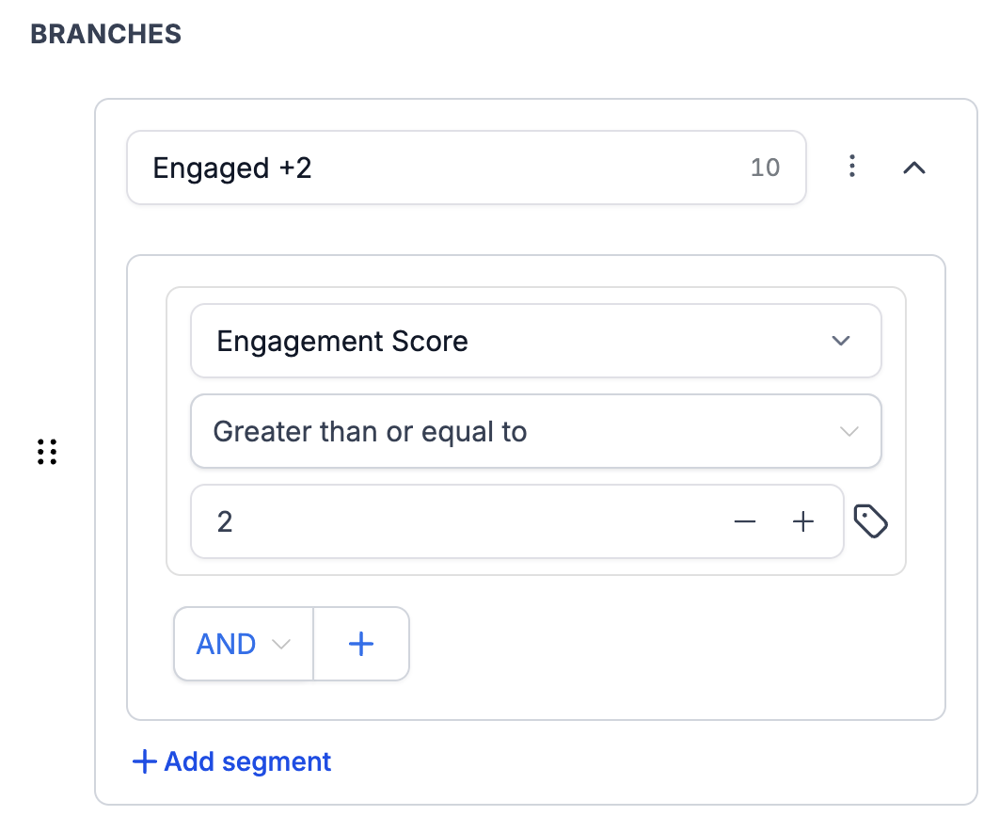
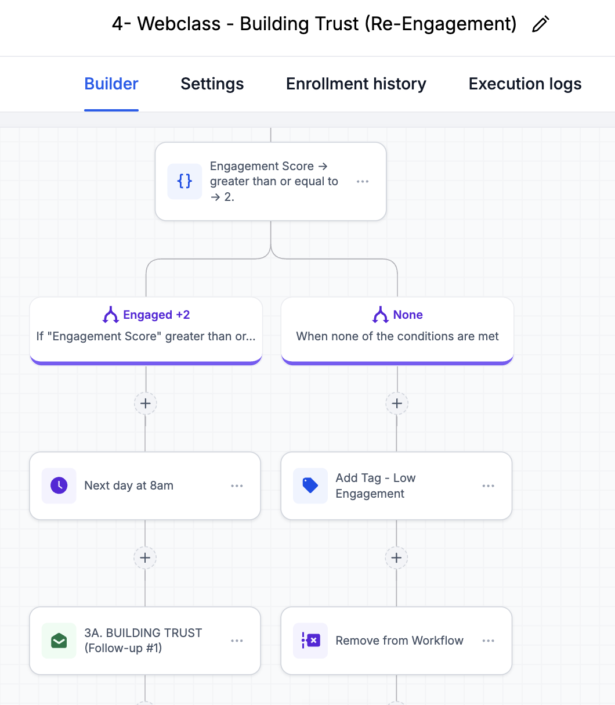
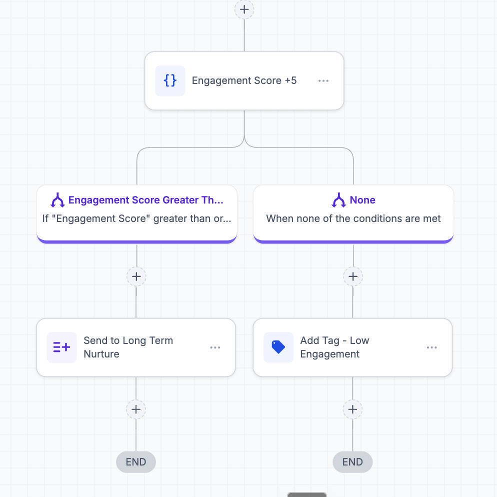
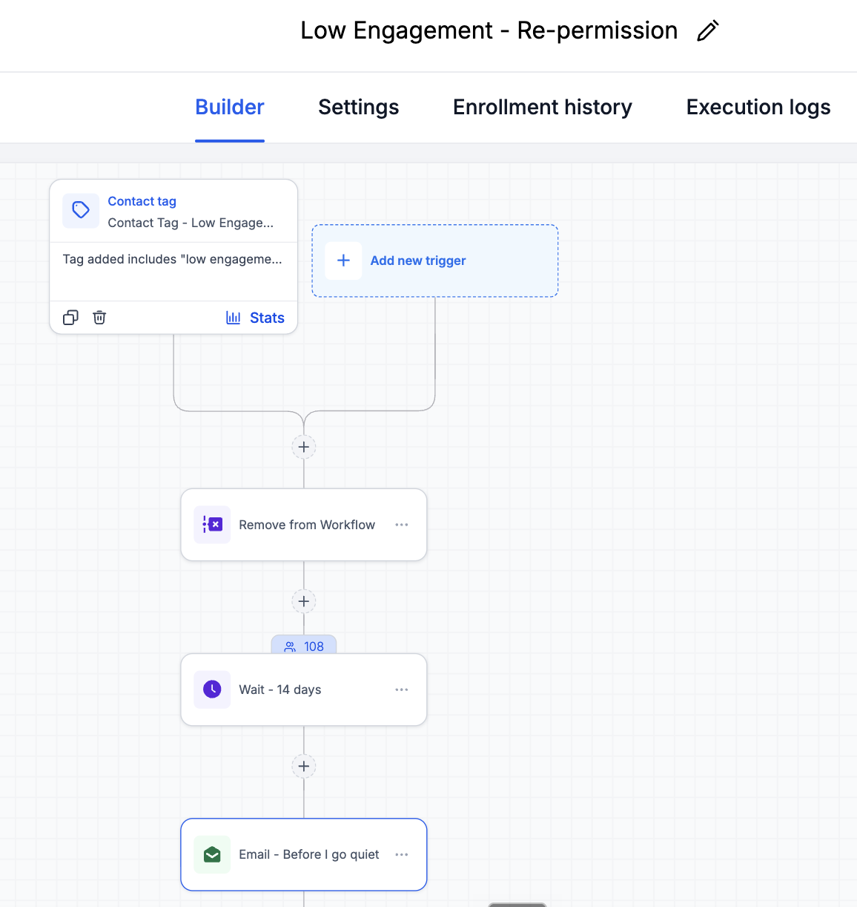
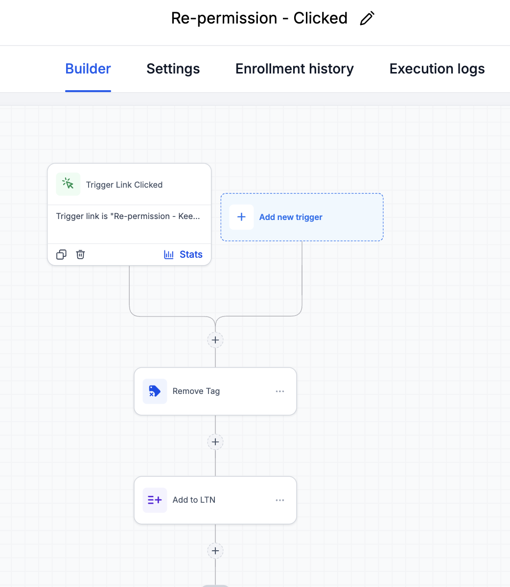

You need your funnel email series already built in GHL, at minimum Building Trust / Re-Engagement and Cart Reopen, because the gates live inside them. Read the Email Automation Overview first if you haven't. Have two things written down before you start: the URL of your evergreen masterclass access page, and the name of the calendar your booking link uses. Your names may differ from the examples in this guide. That's fine. Match the structure, not the labels.
This guide pairs with a Loom where Shannon builds the whole system on screen: Watch the walkthrough here. Some people build best watching it done, some build best clicking through a page. Use whichever works for you. They cover the same steps in the same order.
Gmail and Apple watch how many of your emails get opened. When too many go unread, they start filing you under Promotions or spam for everyone, including the people who love hearing from you.
That's the whole problem this system solves. A list always collects people who stop reading. They signed up with real intentions, then life got loud, and now your emails land unread in an inbox they never open. Every unread send teaches the inbox providers that your mail is skippable. Left alone, the quiet crowd slowly drags down deliverability for your whole list.
The fix is not sending less. The fix is noticing who stopped reading and handling them with grace: a pair of checkpoints that catch quiet contacts, a respectful two week pause, and one honest email that lets them choose to stay or go. People who choose to stay come back to your list. People who say nothing stop receiving, which protects everyone else.
A small list is exactly when this takes twenty minutes instead of an afternoon of cleanup. Build the gates before you have a problem and you will never have the problem. Your open rates stay honest from day one, and inbox providers learn early that your mail gets read.
Five pieces, each small. GHL keeps a score of how engaged every contact is. Two gates check that score at key points in your funnel. Quiet people get tagged, rested, and asked one honest question.
| Piece | What it does |
|---|---|
| Engagement scoring | GHL adds points when a contact opens, clicks, replies, or books, and subtracts points for unsubscribes and spam complaints. Runs by itself once you turn it on. |
| Gate 1 | At the start of Building Trust / Re-Engagement. Score of 2 or more continues. Below that, the contact gets the low engagement tag and exits the workflow. |
| Gate 2 | At the end of Cart Reopen. Score of 5 or more graduates into Long-Term Nurture. Below that, the tag. |
| The goodbye email | Fourteen days after the tag lands, one email asks the honest question: do you still want these? One click says yes. |
| The rescue | Clicking that link removes the tag and returns them to Long-Term Nurture automatically. Silence means they stop receiving. |
The gates sit inside the funnel you have already built. Everything downstream of the webclass flows through them.

Follow the sections in order. Scoring must be on before the gates can read a score, the tag must exist before anything references it, and both automations must be live before any contact gets tagged. Do not send anyone through the gates until every section of this guide is done.
GHL has a built-in scorekeeper. It's off by default, hiding in Settings, and usually ships with a few broken starter rules. You'll clean those up, add the good ones, and flip it on.
Snapshot accounts usually come with leftover rules pointing at tags or calendars that don't exist in your account, things like a reply rule tied to a random string of letters. A rule pointing at nothing scores nothing. Clear the clutter.
Click Add new rule for each of these. The first dropdown picks the rule type, the second sets the condition, then you set Add or Subtract and the points.
The reply rule is special and gets its own step below.
The calendar in the screenshots is Shannon's. Yours has a different name. Open your booking link, note which calendar it books into, and pick that one in the rule. A rule aimed at a calendar you don't use never fires, and someone who books a call with you deserves the points: booking plus confirming earns 6, which carries them safely past both gates. That's on purpose. A person who booked a call is never a cold lead, whatever her inbox habits look like.
A reply is the strongest signal on this list, and GHL won't let you score "any reply" directly. The reply rule type forces you to add a tag condition. The workaround: point it at a tag that nobody has, so every reply passes the check.
Since no contact carries score-suppress, every reply scores. Bonus: if a chatty friend or a test contact ever needs to stop earning points, put score-suppress on just them and the rule skips them.

Your finished rule list should look like this. When it does, turn the Engagement Score toggle on at the top of the page, and publish if it asks.

A score of 2, the first gate's bar, is two opens, or one click, or one reply. A score of 5, the second gate's bar, takes sustained attention across a sequence. Someone using Apple Mail, which hides opens, still gets through on clicks and replies. The bars are low on purpose. The gates exist to catch the truly gone, not to punish the quiet-but-reading.
One tag powers the whole back half of this system. Thirty seconds to make, and everything after references it.
GHL loads its lists when a page opens. If you create a tag and then can't find it in a picker on a page that was already open, the page is showing you a stale list. Hard refresh the browser tab and look again. This one habit will save you three headaches across this build.
Building Trust (some snapshots name it Re-Engagement, same series) is a long sequence that goes to people who didn't buy. Sending fourteen emails to someone who never opened the first twelve hurts you. Gate 1 asks one question before the series starts: has this person shown any sign of life?
The condition you're about to add lives in the action picker, the panel that opens from the + on the canvas. If you're looking at a panel titled "Add trigger," you're in the wrong panel and If/Else will never appear there. Close it and click the + on the connector line instead. In the action search box, type "if" and pick If/Else.

Saving splits the canvas into your named branch and a None branch. Engaged people flow left into the series that already exists. Quiet people exit right.
The finished gate looks like this:

GHL has two saves and needs both: Save Action inside the panel you're editing, and Save in the top right corner of the workflow. Skipping the second one silently discards your work. This applies to every workflow edit in this guide.
Cart Reopen is the last stop before Long-Term Nurture, the list someone might sit on for a year. Gate 2 is the graduation exam: only people showing sustained engagement earn a long-term seat.

The Add to Workflow action must sit inside the Engaged 5+ branch, not above the gate and not in the None branch. Above the gate, everyone reaches Long-Term Nurture before the question gets asked. In the None branch, you'd be graduating exactly the wrong people. Look at the screenshot and match it.
A trigger link is a special GHL link that knows who clicked it and can fire automations off the click. A regular link can't do that, and the click is what brings someone back from the quiet list.
GHL generates a unique tracking URL that redirects to your page. Only clicks on that generated link fire the automation. Your masterclass page's normal URL lives in funnels, emails, and ads, and none of those clicks touch this system. The only place this trigger link will ever appear is inside the goodbye email, so the only people who can fire the rescue are people who received it.
One email, one job. It tells the truth: you signed up for a reason, something changed, and that's allowed. One click says "keep me." Silence says goodbye. No guilt in either direction.
The template below is written in Shannon's voice for her audience. That tone may or may not be right for your ICP. Paste it into Claude, tell it who you serve, and ask for a rewrite that sounds like you, keeping the structure intact. Then write your final version in Google Docs before you touch GHL. Real examples of adapted emails live in the email swipe folder.
You signed up for these emails for a reason.
And somewhere between then and now, something changed. Maybe they've been landing in spam. Maybe your inbox looks like mine, forty-seven unread and a brain to match. I sign up for things with the best of intentions and watch them slip right past me, so I get it. Life doesn't always leave room.
But if the quiet is on purpose, I don't want to keep showing up uninvited.
So this is me checking, once: if you still want me here, click here and you're staying. That's the whole thing. One click.
If not, do nothing and this is the last one. No guilt trip, no hard feelings. And if you ever want back in, just reply and tell me. The door doesn't lock from my side.
Your Name
The "click here" link is where the trigger link goes, and Section 09 shows exactly how to insert it. And the "just reply and tell me" line is worth keeping even though a reply doesn't fire the automation: if someone writes back asking to stay, remove their low engagement tag by hand on their contact record. A reply to this email is the best outcome it can produce.
Two small workflows close the loop. The first sends the goodbye email two weeks after someone gets tagged. The second listens for the click and brings them home.
Some tagged contacts are still sitting mid-sequence somewhere, and a goodbye email lands strangely while your regular emails keep arriving. This action stops the presses first.
The two silent weeks are what make "I noticed you've gone quiet" feel true instead of automated. The 8 PM window lands the email in the evening scroll.
Pasting the masterclass page's normal URL makes an email that still works, but the click fires nothing: no untag, no return to the list. The merge tag from the custom values picker is what makes the click count. If your finished link shows a regular web address instead of a merge tag, redo it through the tag icon.
The finished workflow, top to bottom:


The tag trigger fires at the moment a tag is added, and only on a published workflow. Tag someone while these sit in draft and the moment passes silently: they stay tagged forever and no email ever comes. Both automations live first, gates and tagging after. If you build in this guide's order, you're already safe.
Five minutes with your own contact record proves the whole loop. Run it once and you'll never wonder whether the machinery works.
Mostly nothing, which is the point. A trickle of contacts will collect the tag at the gates. Two weeks later each one gets the goodbye. A few click back in, some unsubscribe, most stay silent and simply stop receiving. Every one of those outcomes protects your sender reputation. The system asks for no attention until your list is big enough to be worth a cleanup routine, and that's a separate guide.